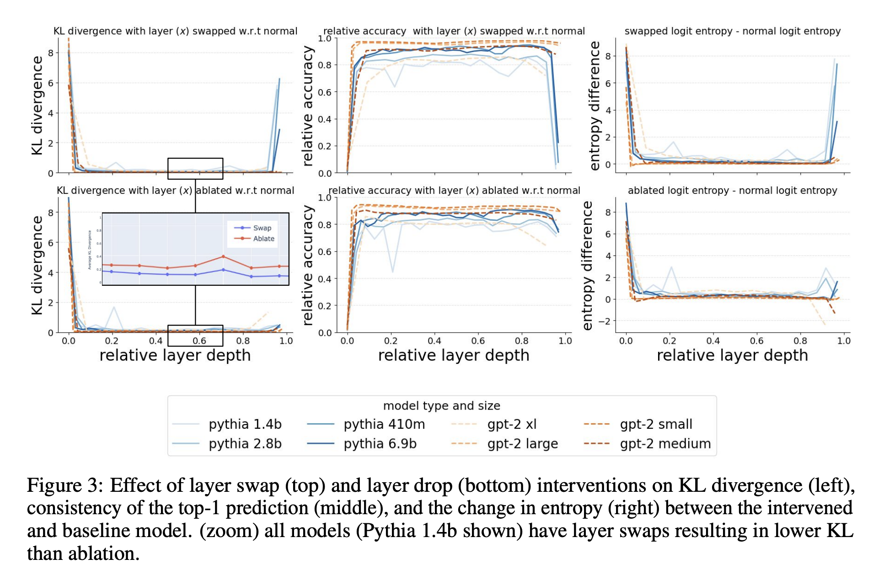

Transformer Stages
October 24, 2024 • Achyut Kowshik, Alex Loftus
Introduction
Achyut + Alex To-do
The Remarkable Robustness of LLMs
In 2024, researchers discovered that large language models exhibit surprising resilience to architectural modifications. Through systematic experiments deleting and reordering layers, they found that models retain up to 95% of their original accuracy even after significant interventions.
The work, led by Vedang Lad, Wes Gurnee, and Max Tegmark at MIT, studied five state-of-the-art language models ranging from 6.5 to 8 billion parameters. Their investigation revealed four universal stages of inference that characterize transformer processing.

The stages progress from early layers that integrate local context to final layers that refine predictions:
1. Detokenization: In the initial layers, the model transforms raw token representations into coherent entities. This stage proves highly sensitive to layer deletion, suggesting it performs essential contextualization.
2. Feature Engineering: The early-to-middle layers build feature representations through attention-heavy computation. This phase shows remarkable robustness to both deletion and reordering of layers.
3. Prediction Ensembling: The middle-to-late layers mark a transition to MLP-heavy computation, where semantic features convert into concrete next-token predictions through specialized components.
4. Residual Sharpening: The final layers refine predictions by suppressing irrelevant features and calibrating confidence. Like the first stage, these layers prove sensitive to modification.
The researchers traced this robustness to the residual connections in transformer architectures. These connections allow models to form ensembles of relatively shallow computational paths, avoiding strong dependencies on any single layer.
To quantify the robustness, they performed two types of interventions across layers:
- Layer Deletion: Removes individual layers while preserving residual connections.
- Layer Swapping: Exchanges the order of adjacent layers.
The middle layers prove remarkably robust to both interventions:
Emergence of a High-Dimensional Abstraction Phase in Language Transformers
While language models compress their inputs onto low-dimensional manifolds, research by Emily Cheng and colleagues at Universitat Pompeu Fabra revealed that this compression follows a distinctive pattern. Their analysis uncovered a critical phase where representations temporarily expand to higher dimensionality - marking the transition to abstract linguistic processing.

Using the Generalized Ratios Intrinsic Dimension Estimator (GRIDE), they analyzed representation geometry across layers in five large language models. Despite the models' 4096-dimensional hidden states, representations generally lie on manifolds of dimension O(10). However, this low dimensionality gives way to a pronounced peak in middle layers.
The peak exhibits several key properties that suggest its functional importance:
The high-dimensional phase emerges during training, disappears when processing random text, and enables cross-model prediction - indicating it reflects learned linguistic structure rather than architecture.
Through careful probing experiments, the researchers demonstrated that this phase marks a critical transition in processing capabilities. Surface-level features become less recoverable, while semantic and syntactic properties become more accessible.

Critically, better language models show earlier and higher-dimensional peaks. This correlation suggests the high-dimensional phase plays an essential role in linguistic processing - providing an expanded representational space where abstract features can be computed before compression into predictions.
Competition of Mechanisms
@Achyut to-do